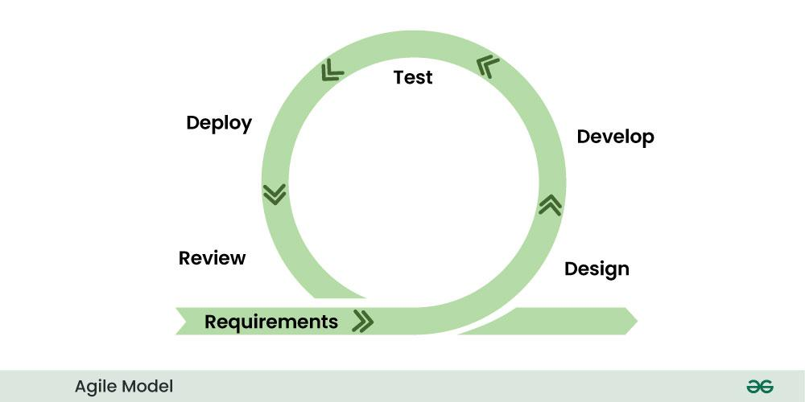

2.11 Agile Software Development
Agile is a family of lightweight, iterative SDLC approaches defined by the Agile Manifesto (2001). Agile values individuals and interactions, working software, customer collaboration, and responding to change over processes, documentation, contracts, and rigid plans.

Agile Manifesto values
- Individuals and interactions over processes and tools.
- Working software over comprehensive documentation.
- Customer collaboration over contract negotiation.
- Responding to change over following a plan.
Agile principles (selected for exams)
- Deliver working software frequently (weeks, not months).
- Welcome changing requirements, even late in development.
- Business people and developers cooperate daily.
- Teams should be self-organising and should reflect regularly so they can improve their process.
Scrum sprints (common Agile framework)
- Sprint. A sprint is a fixed time-box (usually one to four weeks) in which the team delivers a potentially shippable product increment.
- Sprint planning. At the start of the sprint, the team selects which backlog items it will complete.
- Daily stand-up. Each day the team holds a short meeting to share progress and surface blockers.
- Sprint review. At the end of the sprint, the team demonstrates work to stakeholders and collects feedback.
- Retrospective. The team reviews what went well and what to improve before the next sprint begins.
Advantages and disadvantages
- Advantages. Agile provides fast feedback, adapts well to change, keeps customers involved, and delivers business value early.
- Disadvantages. Schedule and cost are harder to predict, the customer must stay engaged, documentation may be lighter, and very large distributed teams need strong discipline to succeed.
Exam question — Agile
Q: Explain Agile software development. State the four values of the Agile Manifesto and describe how sprints work in Scrum.
Model answer points:
- Define Agile as iterative, incremental, customer-collaborative development based on the Agile Manifesto (2001).
- State the four values: individuals and interactions, working software, customer collaboration, and responding to change are preferred over rigid process, heavy documentation, contracts, and fixed plans.
- Explain a Scrum sprint as a time-boxed iteration that includes planning, daily stand-ups, a review demo, and a retrospective.
- Mention advantages (flexibility and early delivery) and disadvantages (estimation difficulty and need for committed stakeholders).